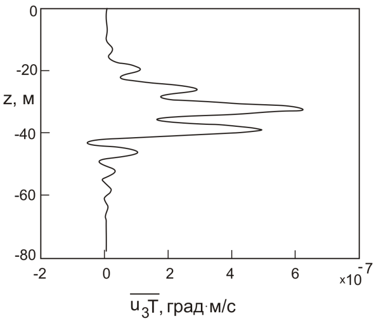

ВОПРОС / ОТВЕТ ДЛЯ НАЧИНАЮЩИХ
polzovatel-902 / 13.07.2010, 09:21/00:41
Форум:
Объясню на примере, чтоб было понятней... Открываю в кореле картинку (футболку с надписью) в формате JPG, мне нужно вытянуть из футболки надпись, т.е разъеденить файл... Говорят нужно формат изменить, еще что-то... Объясните, пожалуйста, что нужно сделать для этого...? Заранее спасибо.
72 в настройках монитора в системе, там может стоять 96, но сути не изменит.
А 300 должно стоять в настройках принтера. в диалоге печати корела на против выбора принтера есть кнопка, открывающая его настройки.
огромное вам спасибо, очень помогли.
пойду пробовать принтер значит мучить)
Добавлено (15.12.2010, 14:10)
---------------------------------------------
а как мне тогда их в картинки перевести, чтобы в ворд можно было вставить и вид нормальный был, а то они тоже такие кривые там получаются при экспорте
так и думал что вставляют потом через клипборд в ворд :D
а там соответственно они в лучшем случае через OLE или растром на 72 дпи что почти одно и тоже, отчего и получаются ступеньки и в ворде и на принтере.
не надо принтер мучить.
экспортируйте в WMF и вставляйте его в ворд. это векторный формат который ворд понимает.
вобще EMF типа новее и круче, но почему-то ворд 2010 его отображает без сглаживания и соответственно выглядит это страшнее :(
Спасибо всем за ответы и терпение)
Помогло только одно - экспортировать в png. Остальные варианты выдавали всё равно ступеньки.
даже WMF? странно.
растр хоть 300 дпи выставляли?
вы делали статью чтобы отдать в журнал?
а вы спрашивали в каком формате они принимают статьи?
После таких заявлений кто-то может подумать, что PNG – это лучший формат для конвертации векторный изображений в растровые.
При экспорте в любой растровый формат программа предоставляет соответствующее окно настройки параметров экспорта.
Вот прилагаю что в итоге получилось при разных вариантах.
ну да, для журнала, они принимают только всё в ворде, рисунки должны быть как картинки и вставлены в ворд.

Добавлено (16.12.2010, 16:58)
---------------------------------------------
для wmf и emf он мне такое окно не выдает. может где-то отдельно настройки для этого есть, но при экспорте нету.
емф и вмф примитивные векторные форматы, там и настраивать то нечего :)
хотя в данном случае получился вполне годный пнг
хорошо хоть не в джипег зажали :)))
ну да) хоть в чем-то нормально получилось)
можно ли как то прикрутить к X5 PHOTOSHOP ну не могу найти нигде - как?
Страницы